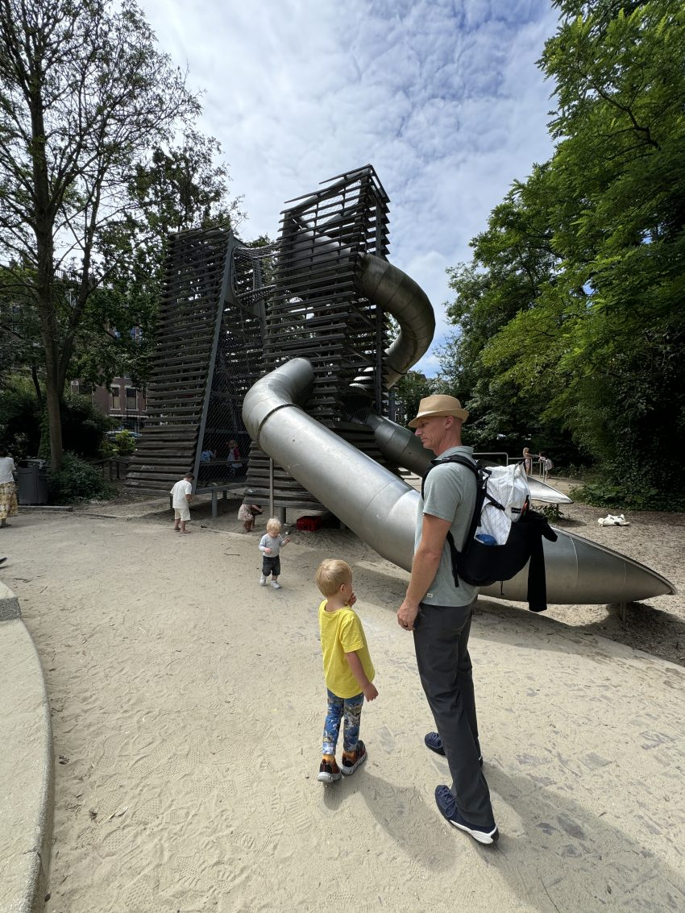
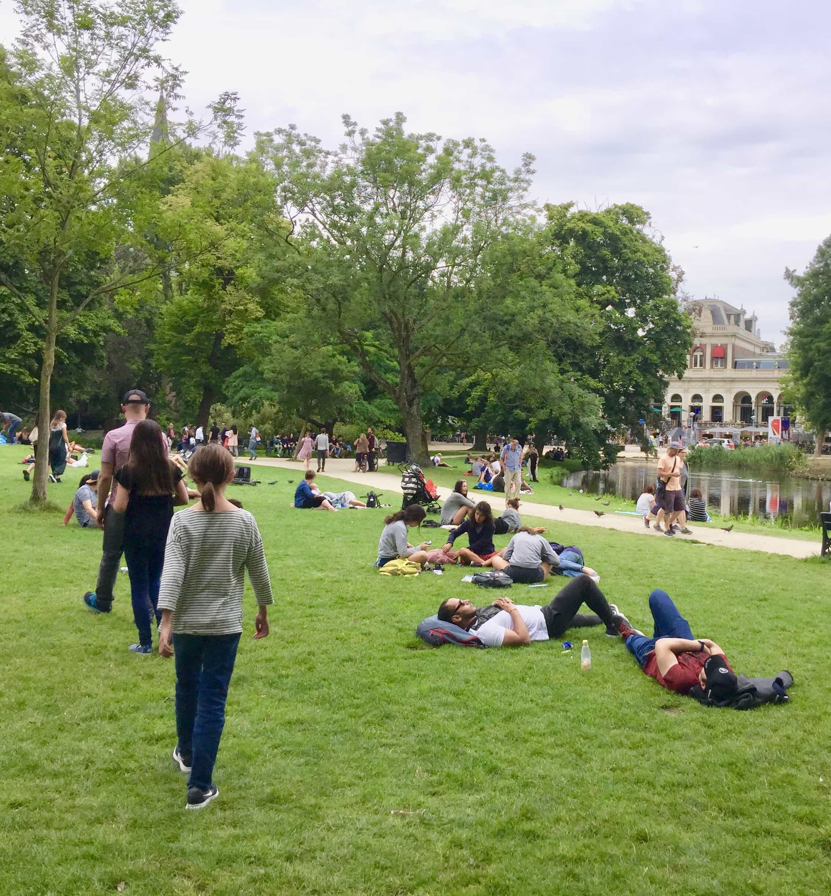
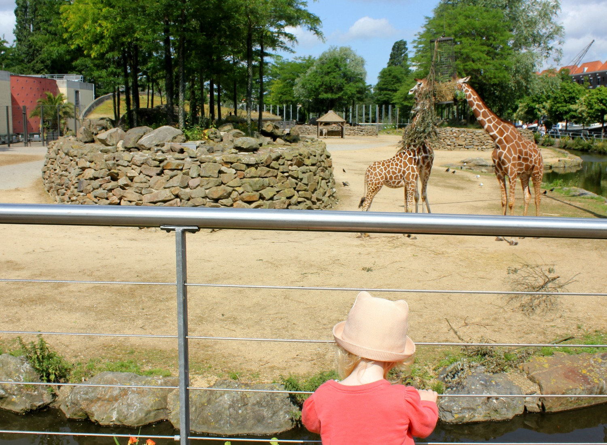
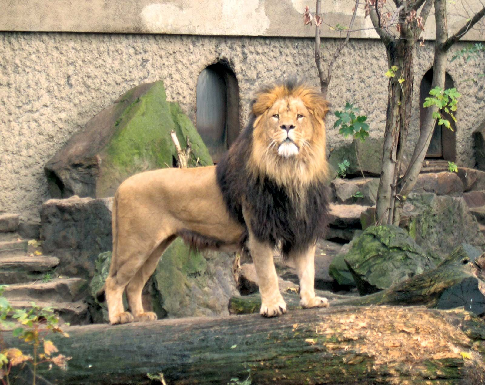
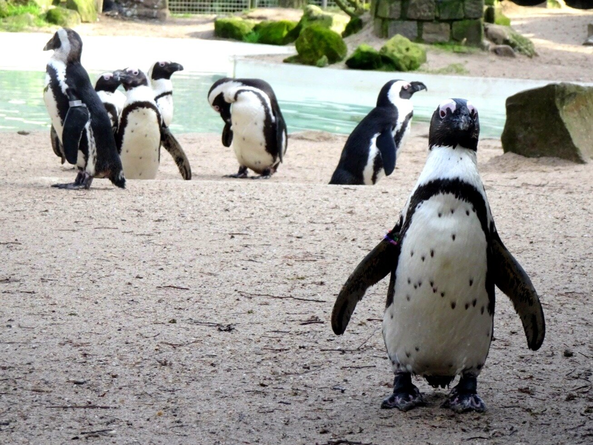
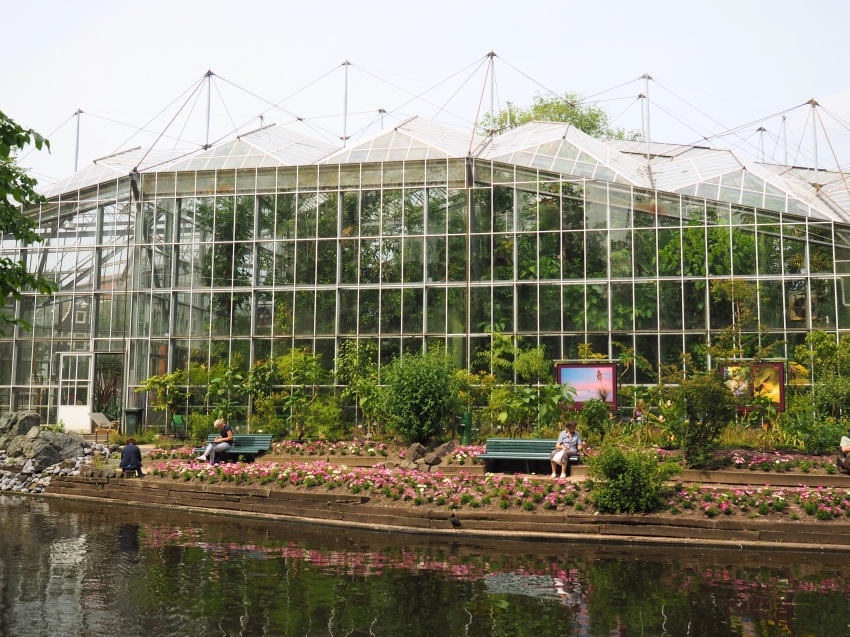
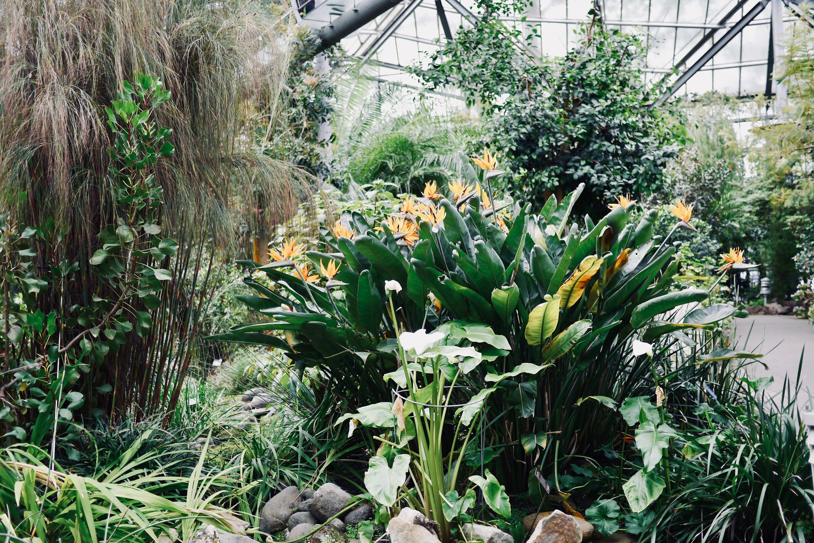

Six Vondelpark playgrounds five minutes away. A world-class zoo seven minutes from the apartment. A butterfly house around the corner. Amsterdam is extraordinarily good for this trip.

Vondelpark will become the family's daily rhythm; a place you keep coming back to rather than checking off. Six playgrounds, multiple cafés, a paddling pool in warm weather, and the Openluchttheater with free outdoor performances starting in May.
The main toddler playground near the Amstelveenseweg entrance. Fenced area with a separate toddler section including sandpit, baby swings, and water play. The café alongside it serves wood-fired pizza, poffertjes, and pancakes with a terrace overlooking the pond. On sunny weekends, there's a bouncy castle. This is the place you'll be every other afternoon.
At the park's southern tip, a more adventurous playground with a giant climbing structure, a massive slide, and a sandbox. Adjacent family café with a kids' menu. Slightly quieter than Groot Melkhuis.
The open-air theatre starts its season around the Whitsun weekend (May 24–25). Typical schedule: Fridays dance, Saturdays kids'/family shows, Sundays music. Free, no booking needed; just show up. Program posts in April at openluchttheater.nl. Bring a blanket and food.
The main path through Vondelpark is wide, calm, and perfect for cycling with children. Cargo bikes (bakfiets) can be rented from MacBike at Overtoom; Bodhi sits in the front box with seatbelts. The park is a much safer cycling environment than Amsterdam's streets.
Seven minutes' walk from the apartment; probably the most convenient world-class zoo in Europe.



Over 700 animal species in a park setting that dates to 1838. Not a sterile zoo; it feels like a botanical garden that also has animals. Wide, flat paths throughout. Calm enough for Edie on a weekday morning.
The "Artis de Partis" route is designed for young children: petting zoo, butterfly pavilion, playground, and the option to ride a free trolley when legs get tired. Bodhi will lose his mind here.
ARTIS recognizes the Hidden Disabilities Sunflower lanyard. Spare lanyards available free at the ticket desk. Staff are trained to offer extra support and patience to anyone wearing one; no need to explain.
Go at 9:00 AM on a weekday (Monday to Wednesday are the quietest). The grounds have fewer crowds, Edie will be at her best in the morning, and Bodhi's energy is highest before lunch. Allow 2–3 hours. Leave by noon before it gets crowded and warm.

Founded in 1638. Just 1.2 hectares, small enough to feel manageable and never overwhelming. Seven greenhouses, a butterfly house that Bodhi will love, exotic plants from around the world, and the lovely Orangery café for a sit-down rest.
This is arguably the single best attraction for Edie in Amsterdam. Sensory-rich: flowers, scents, gentle warmth in the greenhouses — but calm, quiet, and with plenty of benches. Nothing to navigate, no queuing, no crowds. Allow yourself to wander slowly.

Worth the extra travel time for a change of pace, especially for a half-day escape from the city.
A thousand hectares of nature on Amsterdam's edge. Free entry. Toddler paddling pools open in May–September. The Ridammerhoeve goat farm has 150+ goats and makes its own cheese; Bodhi can feed them. Boerderij Meerzicht is a pancake house with a playground, deer, and peacocks.
Heritage trams run on Sundays. Reachable by bus or bike (about 30 minutes from center). Best as a full half-day, ideally when the city feels crowded.
Amsterdam's largest outdoor playground, plus a mini train ride (~€3), a petting zoo, a hedge maze, mini golf, and a pancake house. Nearly all free beyond the train ticket. Good option on a quiet weekday when Vondelpark feels too familiar.
A cargo bike (bakfiets) is the best Amsterdam option for a toddler. Bodhi sits in the front box with proper seatbelts, visible to the rider at all times. MacBike at Overtoom (next to Vondelpark) rents cargo bikes from €32.95/day with child seats included.
Important: Amsterdam cycling traffic is intense on main roads. Stick to Vondelpark paths and quieter residential streets. The park itself is ideal for a family ride.